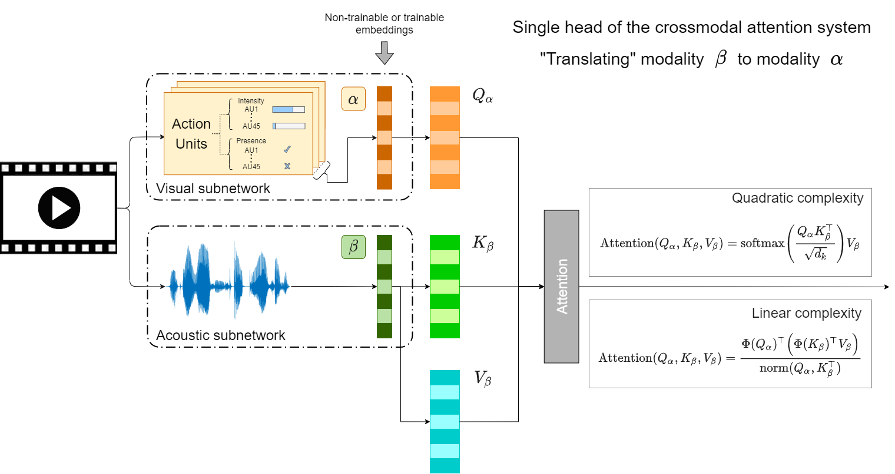
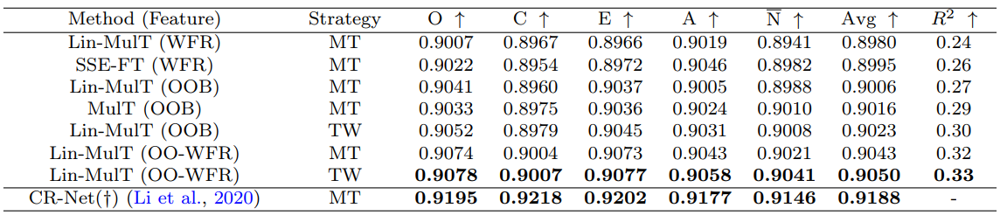

Multimodal Sentiment and Personality Perception Under Speech: A Comparison of Transformer-based Architectures
Abstract
Human-machine, human-robot interaction, and collaboration appear in diverse fields, from homecare to Cyber-Physical Systems. Technological development is fast, whereas real-time methods for social communication analysis that can measure small changes in sentiment and personality states, including visual, acoustic and language modalities are lagging, particularly when the goal is to build robust, appearance invariant, and fair methods. We study and compare methods capable of fusing modalities while satisfying real-time and invariant appearance conditions. We compare state-of-the-art transformer architectures in sentiment estimation and introduce them in the much less explored field of personality perception. We show that the architectures perform differently on automatic sentiment and personality perception, suggesting that each task may be better captured/modeled by a particular method. Our work calls attention to the attractive properties of the linear versions of the transformer architectures. In particular, we show that the best results are achieved by fusing the different architectures’ preprocessing methods. However, they pose extreme conditions in computation power and energy consumption for real-time computations for quadratic transformers due to their memory requirements. In turn, linear transformers pave the way for quantifying small changes in sentiment estimation and personality perception for real-time social communications for machines and robots.
Contribution
We compare different Transformer-based architectures, with the aim of finding the trade-off between accuracy and efficiency, as well as the best competitive architecture that works well for both sentiment and personality perception;
We use Action Units as inputs for the visual modality, which are supposed to be invariant to some appearance-based features (e.g., skin-tone or hair-style). Thus, mitigating possible sources of bias toward under-represented groups/categories while promoting cross-dataset/domain/scenario generalization.
We consider memory and speed parameters as required by real-time processing in human-machine, human-robot interactions, an important goal of future developments.
The proposed approach was evaluated on different tasks and datasets. The results obtained are similar to those given by state-of-the-art models on the respective tasks and datasets.
Proposed method
Single head of a transformer. Transformers translate one information source (e.g., β, here associated with the acoustic modality) to another one (e.g., α, here associated with the visual modality). Embeddings indicated by darker striped columns can be features derived from the raw data or the outputs of a pretrained deep model. Transformers learn keys (K_β) and values (V_β) of modality β and the queries (Q_α) from the α modality. These three quantities denoted by lighter striped columns form the core of the attention system of a single head. Attention is computed differently in linear and quadratic transformers, sketched in the boxes on the right.
(a) Standard Multi-head attention unit. (b) Multimodal transformer: source modalities i and j are transformed to target modality k. Such two units are combined by another transformer network that utilizes self-attention to fuse the information pieces to form a branch within the multimodal network before outputting the predicted score(s).

Results
Results for multimodal sentiment analysis on CMU-MOSI. The rows on top: evaluated methods. The rows at the bottom: state-of-the-art results obtained from the literature. Notations: ↓ (↑) shows that lower (higher) values are better. Best results (per metric) for both the evaluated methods and those found in the literature are highlighted in bold.

Personality perception results on the First Impressions V2 dataset: ↑ shows that higher values are better. Best results for both the evaluated methods and those found in the literature are highlighted in bold.
In comparison with the state of the art, CR-Net (Li et al., 2020) still gives better results compared to the evaluated architectures, feature sets and training strategies. However, CR-Net works under a particular and different condition we are trying to avoid, i.e., it uses raw visual data (from the entire scene and the person’s face) that can be sensitive to appearance-based features. In contrast, the evaluated approaches use Action Units and FAb-Net features as visual inputs that do not capture identity-specific information according to the literature (Agarwal et al., 2020). Moreover, the evaluated approaches/features may promote cross-dataset/domain/scenario generalization.
Our main findings are summarized as follows:
- On sentiment estimation, MulT, and SSE-FT performed similarly, but with the increase of the database, SSE-FT performed better;
- On personality perception, where the distribution of the data is very narrow, MulT was better than SSE-FT;
- The linear attention version of MulT (Lin-MulT) was competitive in all cases;
- Lin-MulT is computationally efficient. The linear scaling of its memory requirement, instead of the quadratic one, enabled the fusion of the features that gave better results for the case of personality perception;
All in all, memory, speed, accuracy, and fusing capabilities of the Lin-MulT architecture make it an attractive choice for real-time sentiment analysis and personality perception.
BibTex
@InProceedings{pmlr-v173-fodor22a,
title = {Multimodal Sentiment and Personality Perception Under Speech: A Comparison of Transformer-based Architectures},
author = {Fodor, {\'A}d{\'a}m and Saboundji, Rachid R. and Jacques Junior, Julio C. S. and Escalera, Sergio and Gallardo-Pujol, David and L{\H{o}}rincz, Andr{\'a}s},
booktitle = {Understanding Social Behavior in Dyadic and Small Group Interactions},
pages = {218--241},
year = {2022},
editor = {Palmero, Cristina and Jacques Junior, Julio C. S. and Clapés, Albert and Guyon, Isabelle and Tu, Wei-Wei and Moeslund, Thomas B. and Escalera, Sergio},
volume = {173},
series = {Proceedings of Machine Learning Research},
month = {16 Oct},
publisher = {PMLR},
pdf = {https://proceedings.mlr.press/v173/fodor22a/fodor22a.pdf},
url = {https://proceedings.mlr.press/v173/fodor22a.html}
}